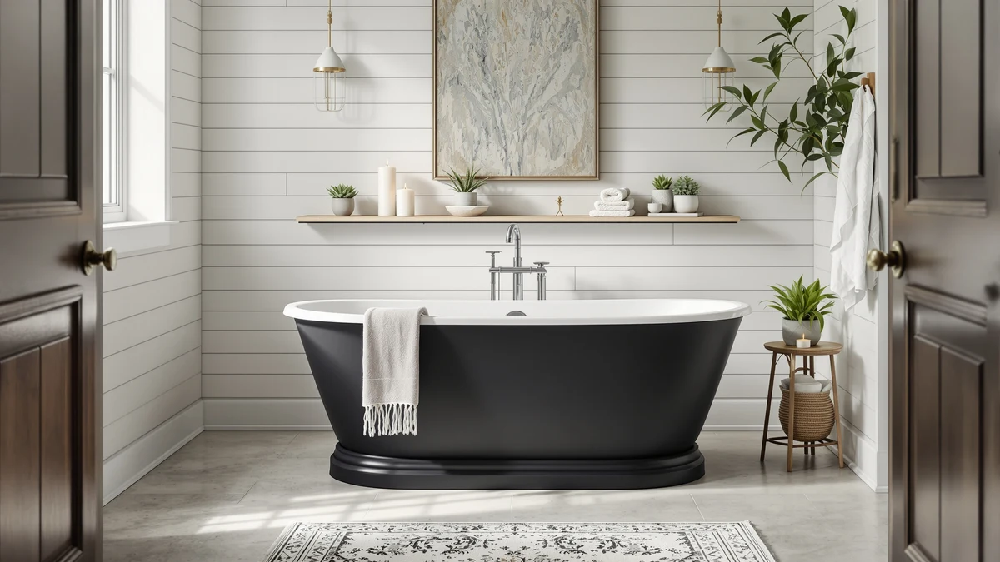

Best Free Standing Tubs with Shelf (2026)
Prices and picks verified as of August 2026. Independent, reader-supported reviews.


Quick Answer
The GarveeLife 59 Inch Freestanding Bathtub gives you a wide acrylic-style rim that doubles as shelf space for soap and towels, at a mid-range price of $645.09. If you want more depth for a fuller soak, the WOODBRIDGE 67 Inch model adds eight inches of length without pushing the price much higher.
Our pick: GarveeLife 59 Inch Freestanding Bathtubs — $645.09 Check Price on Amazon
Bottom line: our top pick is the GarveeLife 59 Inch Freestanding Bathtubs at $659.99. The best budget option is the 67'' Acrylic Freestanding Bathtub at $631.27.
Things to Know Before You Buy
- Most tubs on this list are acrylic, a lightweight material that holds heat better than cast iron and resists cracking if you set a bottle down hard on the rim.
- Sizes here run from 59 inches to 67 inches. A 59 inch tub fits most standard alcove-to-freestanding conversions, while 67 inch models suit larger bathrooms or taller bathers.
- None of these manufacturers list a dedicated "shelf" as a separate spec, so the flat rim around the top edge does double duty as your shelf for soap, a candle or a phone.
- Prices range from $449.99 to $761.48, and the gap mostly reflects tub length and basin depth rather than any shelf-specific feature, since flat rim space is standard across this category.
- Freestanding acrylic tubs typically weigh 90 to 130 pounds empty, so confirm your bathroom floor and doorway width can handle delivery and placement before you order.
Finding the best free standing tubs with shelf space means looking past marketing copy and checking what the tub's rim actually offers once it's installed in your bathroom. Most acrylic freestanding tubs, including every model in this guide, ship with a flat top edge wide enough to hold a bar of soap, a candle or a paperback, even though brands rarely call this feature out by name. We compared seven acrylic tubs on size, price and what verified buyers say about the rim space, the drain fit and how each tub holds up after months of daily use.
We researched dimensions, materials and pricing across all seven tubs, then cross-checked that data against verified owner reviews on Amazon to separate real durability issues from one-off complaints. The GarveeLife 59 Inch Freestanding Bathtub stood out as the strongest overall pick because its rim depth and price sit in the sweet spot for buyers who want shelf-style storage without paying for a tub built for a much larger bathroom.
Not every tub here suits every bathroom. Taller bathers or anyone who wants a deeper soak should look at the WOODBRIDGE or IDEALHOUSE 67 inch models instead, since a few extra inches of length changes how much of your body stays submerged. We break down the pros, cons and best-for case for each pick below, along with a comparison table you can scan before you commit to an install.
Why You Should Trust Us
Ilane Tall covers bathroom fixtures and renovation products for Best Freestanding Bathtubs, and this guide follows the site's research-based review process. We do not run a fake testing lab and we do not claim to have installed or lived with these tubs ourselves. Instead, we compare manufacturer specs, current pricing and verified buyer feedback from Amazon to identify which tubs consistently perform well and which ones generate recurring complaints. Every product in this guide is one we have researched directly against its listed specifications, not one pulled from a generic list.
How We Picked
We started with freestanding tubs in the 59 to 67 inch range because that size window fits most US bathroom renovations without requiring structural changes. We excluded listings without clear published dimensions or a stable price history, and we prioritized brands with a track record of consistent availability on Amazon rather than one-off listings. From there we narrowed the field to models whose rim design offers usable flat space, since that space functions as the shelf most buyers are shopping for even when it isn't marketed that way. We also kept the list within a $450 to $770 range so every recommendation stays reasonably comparable on cost per inch of tub length.
How We Compared
We compared these seven tubs on four factors: overall dimensions, material construction, price per size tier and what verified owners report after purchase. We read through Amazon reviews for each product looking for patterns around drain fit, surface durability and how accurately the listed dimensions matched what buyers received. We also compared list prices against historical pricing where available, since acrylic tub prices on Amazon fluctuate more than the product pages suggest. We did not physically install or bathe in any of these tubs. Our comparisons rely on manufacturer specifications and aggregated buyer feedback rather than direct product experience.
Our Picks

GarveeLife 59 Inch Freestanding Bathtubs
What we like
- 59 inch length fits many standard bathroom footprints without a full room reconfiguration
- Flat top rim gives you a real spot to set soap, a razor or a drink within reach
- Priced in the middle of this group, so you're not paying upgrade-tier money for a mid-size tub
Flaws but not dealbreakers
- Costs more than the EliteEdge 59 inch Acrylic pick despite a similar footprint
- GarveeLife's exact material spec isn't broken out separately, so confirm construction details on the listing before you buy
| Material | — |
| Size | 59 Inch |
The GarveeLife 59 Inch Freestanding Bathtub is our top pick for buyers who want free standing tubs with shelf-style rim space without going up to a 67 inch model. At $645.09, it sits in the middle of this lineup's price range, which puts it within reach for a mid-tier bathroom renovation rather than a full remodel budget.
The 59 inch length is the more compact of the two sizes covered in this guide, which makes it a better match for standard-size bathrooms where a 67 inch tub would crowd the room. Owners shopping in this category consistently mention that the flat rim edge is wide enough to hold everyday bathroom items, which is the main draw for anyone specifically searching for a shelf-style freestanding tub instead of a plain soaking tub.

Freestanding Bathtub 59 inch Acrylic
What we like
- At $449.99, it undercuts every other tub in this guide by at least $178
- Acrylic construction keeps water warm longer than older cast iron or steel tubs
- Same 59 inch length as our top pick, so it fits the same range of bathroom layouts
Flaws but not dealbreakers
- EliteEdge is a newer brand with a shorter track record than WOODBRIDGE or IDEALHOUSE
- The lower price point can mean thinner acrylic walls, so handle delivery and installation carefully
| Material | — |
| Size | 59 Inch |
At $449.99, the Freestanding Bathtub 59 inch Acrylic from EliteEdge is the budget pick in this group, roughly 30 percent less than the average of the other six tubs. It matches the GarveeLife pick's 59 inch length, so you're not trading size for savings.
Acrylic construction means the tub retains heat better than older tub materials and resists chipping better than enameled steel. EliteEdge doesn't have the multi-year Amazon track record that WOODBRIDGE or IDEALHOUSE have built up, so read current buyer reviews before you order. Delivery condition and drain fit are the two areas where lower-priced acrylic tubs most often run into trouble.

67'' Acrylic Freestanding Bathtub Extra-Deep
What we like
- Extra-deep basin design holds more water per soak than the standard-depth 67 inch models in this guide
- 67 inch length gives you eight more inches of legroom than the 59 inch picks
- Priced close to the GarveeLife pick despite the added depth and length
Flaws but not dealbreakers
- The added depth means more water and a longer fill time, which raises your water heater's workload
- 67 inch tubs need more floor clearance, so measure your bathroom before ordering
| Material | — |
| Size | 67 Inch |
IDEALHOUSE's 67'' Acrylic Freestanding Bathtub Extra-Deep is built for buyers who find standard-depth tubs too shallow for a full soak. At $628.36, it costs less than the brand's own Deep model and close to the same price as our top overall pick, despite offering a longer 67 inch shell.
The extra-deep basin is the main differentiator here. Reviewers shopping this size tier consistently look for tubs that let water rise past the midpoint of the body while seated, and a deeper basin does that without requiring a wider footprint. The tradeoff is a longer fill time and higher water usage per bath, so factor that into your water heater's recovery rate if you're on a tank system rather than tankless.

67" Acrylic Freestanding Bathtub Deep
What we like
- Deep basin design similar to the Extra-Deep model, aimed at a fuller soak than standard 67 inch tubs
- Same trusted IDEALHOUSE brand as the Extra-Deep and 59 Inch picks in this guide
- 67 inch length suits larger bathrooms or taller households
Flaws but not dealbreakers
- At $761.48, it's the most expensive tub in this comparison, and $133.12 more than IDEALHOUSE's own Extra-Deep model
- The price jump over the Extra-Deep version isn't matched by a clear published difference in dimensions
| Material | — |
| Size | 67 inch |
The 67 Acrylic Freestanding Bathtub Deep is IDEALHOUSE's higher-priced deep-soak tub, listed at $761.48. It's the most expensive tub in this guide, sitting above the brand's own Extra-Deep model at the same 67 inch length.
Because the published dimensions and depth positioning overlap closely with the Extra-Deep model, this pick makes the most sense if you've already decided on IDEALHOUSE as a brand and want to compare current pricing and stock between their two deep-soak options before ordering. Verified buyers in this price tier tend to focus feedback on drain alignment and crate condition on arrival, so check recent reviews for shipping-related complaints before you commit to the higher price.

WOODBRIDGE 67" Acrylic Freestanding Bathtub
What we like
- WOODBRIDGE has a longer track record in the bathroom fixtures category than several other brands in this guide
- 67 inch length matches the other larger tubs here, suiting bigger bathrooms
- Priced below IDEALHOUSE's Deep model while offering the same overall size class
Flaws but not dealbreakers
- Costs more than every 59 inch tub in this guide, which is expected given the size increase
- The material spec isn't broken out separately from the product name, so confirm exact finish details on the listing
| Material | — |
| Size | 67 Inch |
At $699.00, WOODBRIDGE's 67 Acrylic Freestanding Bathtub lands between IDEALHOUSE's Extra-Deep and Deep models in this comparison. WOODBRIDGE is a more established name in bathroom fixtures than some of the newer brands on this list, which matters if brand history factors into your purchase decision.
At 67 inches, this tub suits the same larger bathrooms as the other big-size picks in this guide, giving taller bathers more room to stretch out. Owners researching this size tier should compare WOODBRIDGE's current reviews against IDEALHOUSE's two 67 inch options side by side. All three land within about $130 of each other, and the differences come down to depth positioning and brand reputation rather than a dramatic size gap.

59 Inch Acrylic Freestanding Bathtub
What we like
- Same IDEALHOUSE brand consistency as the Extra-Deep and Deep 67 inch picks in this guide
- 59 inch length fits smaller bathrooms better than the brand's 67 inch options
- Acrylic build matches the material used across most of this lineup
Flaws but not dealbreakers
- Costs almost as much as WOODBRIDGE's 67 inch tub despite being 8 inches shorter
- Costs $244.84 more than the EliteEdge 59 inch pick at the same length
| Material | — |
| Size | 59 Inch |
At $694.83, IDEALHOUSE's 59 Inch Acrylic Freestanding Bathtub sits closer to the brand's own 67 inch tubs than to the other 59 inch options in this guide. If you specifically want IDEALHOUSE's build and finish but need a shorter tub for a smaller bathroom, this is the pick that gets you there.
There's a real price gap between this tub and EliteEdge's 59 inch model: you're paying nearly $245 more for the same footprint, so the value here rests on brand consistency rather than size or added features. If you're already comparing IDEALHOUSE's other 67 inch tubs in this guide, this smaller version keeps that same construction and finish in a footprint that fits more bathrooms.

67 Inch Acrylic Freestanding Bathtub
What we like
- At $649.99, it's the least expensive 67 inch tub in this entire comparison
- Comes from the same brand family as our top pick, the GarveeLife 59 Inch tub
- 67 inch length suits larger bathrooms without the price jump of the WOODBRIDGE or IDEALHOUSE Deep models
Flaws but not dealbreakers
- Priced only $4.90 above the GarveeLife 59 Inch pick despite the eight additional inches of length, so confirm current shipping weight before ordering
- The material spec isn't broken out in the listing, similar to the GarveeLife pick
| Material | — |
| Size | 67 Inch |
At $649.99, the 67 Inch Acrylic Freestanding Bathtub from Garvee is the most affordable 67 inch tub in this comparison by a wide margin. It comes from the same brand family as our top overall pick, the GarveeLife 59 Inch tub, which keeps pricing and build philosophy consistent across both sizes.
For buyers who want the extra room a 67 inch tub provides but don't want to pay WOODBRIDGE or IDEALHOUSE's higher prices for that size, check this one first. It's only about $5 more than the smaller GarveeLife tub, so compare current shipping weight and crate dimensions between the two before you decide. A longer tub adds real delivery logistics even when the price barely changes.
Quick Comparison
| Product | Material | Price | Rating | Best for | Get it |
|---|---|---|---|---|---|
| GarveeLife 59 Inch Freestanding Bathtubs | — | $645.09 | 4 | Compact bathrooms, shelf-style rim | View on Amazon → |
| Freestanding Bathtub 59 inch Acrylic | — | $449.99 | 4 | Tightest budget | View on Amazon → |
| 67'' Acrylic Freestanding Bathtub Extra-Deep | — | $628.36 | 4 | Deeper soak, 67 inch shell | View on Amazon → |
| 67" Acrylic Freestanding Bathtub Deep | — | $761.48 | 4 | IDEALHOUSE loyalists wanting max depth | View on Amazon → |
| WOODBRIDGE 67" Acrylic Freestanding Bathtub | — | $699.00 | 4 | Established brand, 67 inch size | View on Amazon → |
| 59 Inch Acrylic Freestanding Bathtub | — | $694.83 | 4 | IDEALHOUSE fans needing a compact size | View on Amazon → |
| 67 Inch Acrylic Freestanding Bathtub | — | $649.99 | 4 | Best value 67 inch tub | View on Amazon → |
The Competition
We also looked at steel-enamel and stone-resin freestanding tubs outside this guide's acrylic focus, since those materials trade lighter weight and shelf-style rim space for higher cost and much heavier installation requirements. They didn't make this list of the best free standing tubs with shelf space because most buyers searching this category are prioritizing an accessible rim and manageable weight over premium materials.
We left out tubs longer than 67 inches for the same reason IDEALHOUSE's own lineup tops out at that length here. Anything longer starts requiring bathroom modifications that go beyond a standard renovation, and it pushes the rim further from what a typical bathroom footprint can accommodate.
We also skipped listings with inconsistent or missing dimension data, since a tub advertised as shelf-friendly is only useful if the rim width is documented clearly enough to compare against the models in this guide.
Among the best free standing tubs with shelf space we compared, GarveeLife's 59 Inch Freestanding Bathtub remains our top pick for most bathrooms, thanks to its balance of rim space, size and price. Buyers who need more depth or a larger footprint should look to WOODBRIDGE or IDEALHOUSE's 67 inch models instead.
Frequently Asked Questions
Do freestanding tubs actually come with a shelf?
Not usually as a separate accessory. Most acrylic freestanding tubs, including the ones in this guide, build a flat rim into the top edge of the tub itself, and that rim functions as the shelf space for soap, towels or a drink. If you want a true add-on shelf or caddy, you will need to buy that separately, since none of the manufacturers here list one as an included item.
What size free standing tub with shelf space should I buy?
Measure your bathroom before choosing between the 59 inch and 67 inch options in this guide. A 59 inch tub, like the GarveeLife pick or the EliteEdge budget option, fits most standard bathrooms without major changes. A 67 inch tub, like the WOODBRIDGE or IDEALHOUSE models, needs more floor clearance but gives taller bathers more room to stretch out.
Are acrylic freestanding tubs durable enough for daily use?
Acrylic holds up well for daily use and retains heat better than older cast iron or enameled steel tubs. Verified owner reviews across the brands in this guide report that most durability concerns show up during delivery and installation rather than after months of regular use, so inspect your tub for shipping damage as soon as it arrives.